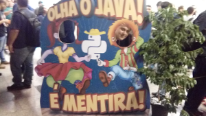

Caipyra 2017
Meu primeiro evento de Python

O objetivo não é desfazer de nenhuma tecnologia ou grupo, o objetivo é jamais perder uma boa piada.
A Surpresa
Eis que aparece o Tales do FastNotas dizendo que tem ingressos para um evento de Python, e ainda por cima, que a Vindi, empresa mãe do grupo bancaria a viagem e a hospedagem (pra acabar com o jabá, devo dizer que trabalho na aceitaFácil).
Além de tudo, é di grátis, tô dentro!
A ida
Saindo de São Paulo com a galera do trabalho, descemos três do ônibus em Limeira, primeira parada rumo a Ribeirão Preto. E o digníssimo motorista voou como um Cometa e nos abandonou, três pessoas a menos no ônibus (um colega ficou dormindo)...
Chegamos mais de duas horas depois ao nosso destino.
O evento
A comunidade Python é bem receptiva, mas a comunidade Python de Ribeirão Preto é sensacional. Fomos muito bem recebidos, e pudemos observar um evento muito bem organizado e preparado.
Comi milhares de paçoquinhas rolha.
Assisti palestras bacanas.
Passeei por Ribeirão Preto numa Carreta Furacão genérica, uma das atividades do evento.
Conversei com gente que não conhecia. Para um típico curitibano, isso é um feito!
Palestras
Algumas foram as minhas preferidas. Não pude ver todas, pois cheguei atrasado e saí adiantado.
A que mais me tocou foi a Creative Programming, do Jan Cassio. Nela ele falou sobre o uso da tecnologia para a manifestação artística. Muitos exemplos tanto de software como de hardware. Eu que sempre gostei de brincar com fractais me reencontrei nessa palestra.
Outra muito bacana, Como um líder pode agir de forma efetiva em uma organização ágil?, me fez pensar como foi boa a experiência única (em toda a minha carreira) de ter um gerente que é um líder (em contraposição a um simples chefe). Palestra bem conduzida que teve até uma pesquisa feita lá dentro, no momento da palestra, com divulgação instantânea de resultados. Parabéns à Daniela Vieira.
Também a palestra do Henrique Bastos, The Walking Devs, foi muito interessante e me fez pensar bem em como somos manipulados. Nos empregos, nos negócios, por nós mesmos. Excelente as fases pelas quais um desenvolvedor passa ao longo de sua vida profissional.
E o momento maior, as Lightning Talks, palestras rápidas de cinco minutos, sempre ótimas. Uma sugestão para a organização: sempre começar com elas após o almoço. Deixam a gente mais ligado.
Eu quero estar lá em 2018!